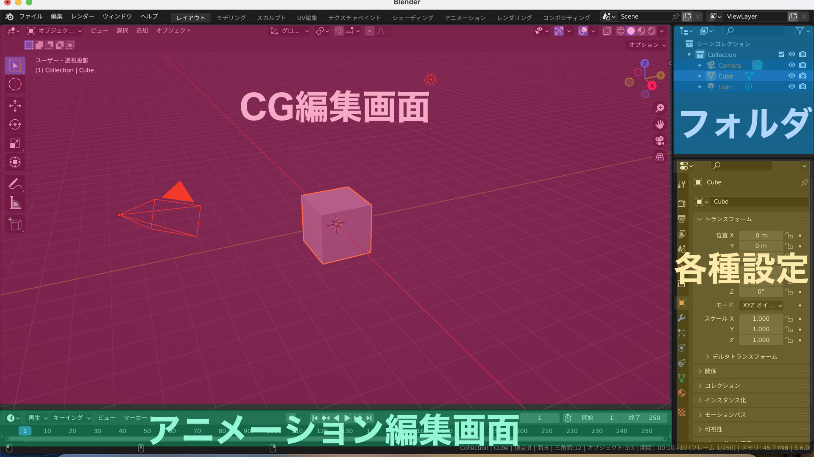
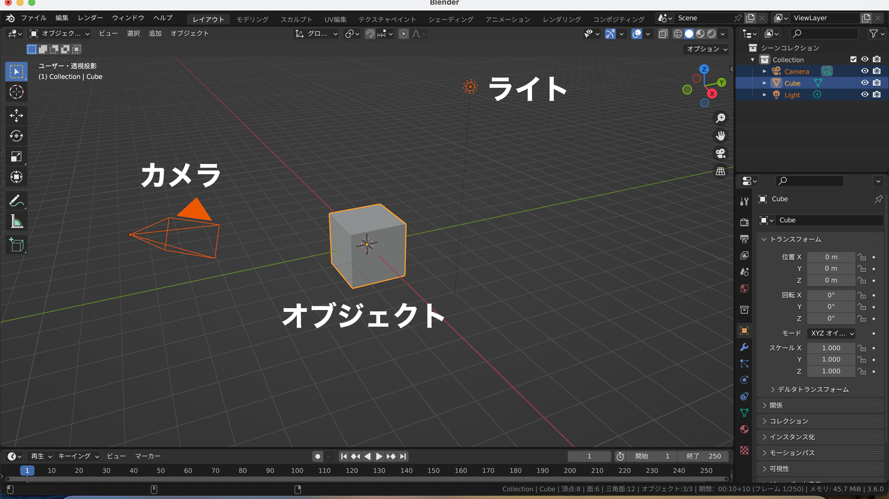

ＣＧ編集画面
＞ここでCGの主要な編集を行います
各種設定
＞CGの書き出しやエフェクトなど、細かな設定を行います
フォルダ
＞追加したオブジェクトなどはここに表示されます。フォルダ分けをしたり、オブジェクトを非表示にしたりできます。
アニメ編集画面
＞キーフレームを使ってアニメーションを編集します

オブジェクト
＞主にCGで描かれる図形・物体を指します
カメラ
＞ここからCGの世界を撮影します。一眼のように被写界深度なども設定できます。
ライト
＞CGの世界の光です。種類、色、強度など自由に変更できます。

視点の向き、ズーム、場所を変えることができます。
いずれもドラッグで操作します。
なお、その下にあるカメラマークをクリックすると、カメラからの視点を確認することができます。

CGではオブジェクトに素材感・質感を設定できますが、常に質感を表示しているとPCに負荷がかかるため、編集の時は簡略化して表示するのが一般的です。
Blenderでは右上のボタンから切り替えることができます。

右側のタブから様々な設定を行うことができます。
特に図形の位置・回転・サイズは頻繁に使います。

CGの基本となる図形を追加します。
画面右上の「追加」から選ぶか、Shift+Aキーでも追加できます。

Blenderでは、編集モードと呼ばれるモードで図形の形を変えます。
オブジェクトを選択した後、画面左上のタブから、通常のオブジェクトモードと編集モードを切り替えられます。
図形の追加 ：Shift＋A
図形の移動 ：G
図形の回転 ：R
図形の拡大縮小：S
削除 ：X
１つ戻す ：Ctrl+Z
１つ進める ：Ctrl+Shift+Z
画像を書き出し：F12